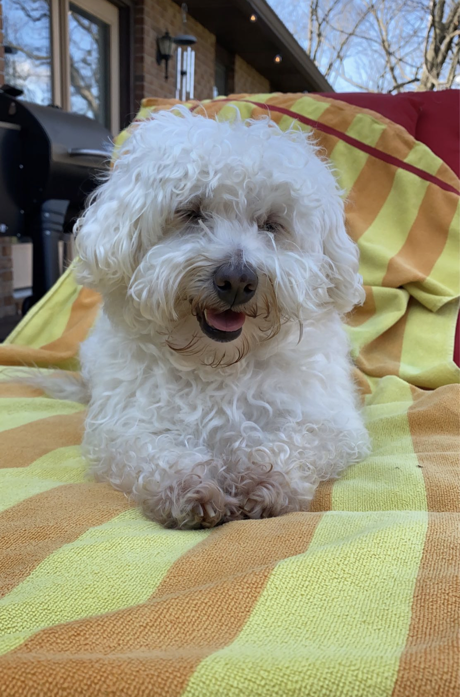

We did not have Chloe as a puppy, but here she is pre-tooth removal
Bio- Chloe is the oldest dog. She is not as playful as she used to be but still does every once in awhile. Chloe had a slipped disc in her back and had to go through surgery a few years ago. She has made a full recovery even though they were not sure if she'd walk again. She is nick-named the million dollar dog because of all her surgeries. Her favorite activity is being a lap dog.
Frequently Asked Questions-
What happened to her teeth? Chloe got an infection that attacked her teeth and gums. The vet recommened a full teeth removal to handle the infection. She is fine without teeth and many old dogs must face the same thing.
How old is Chloe? She is 11 and doing great!